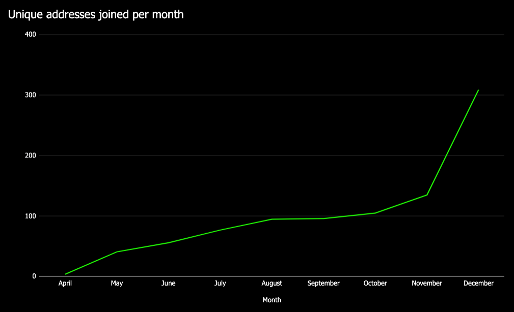
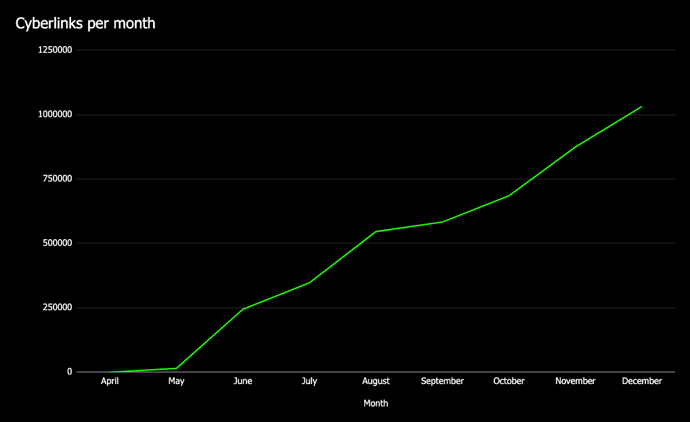
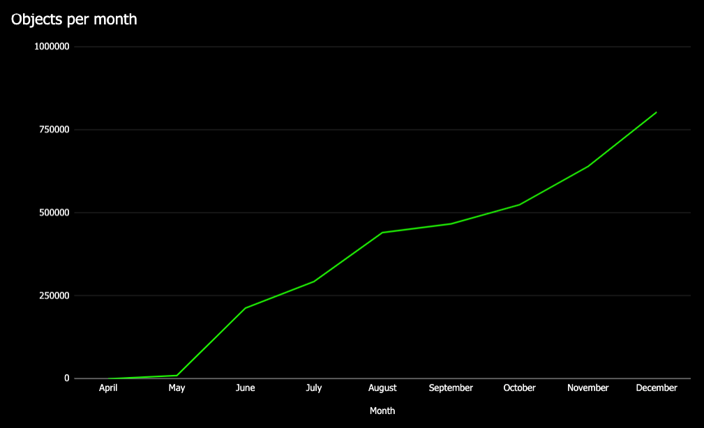
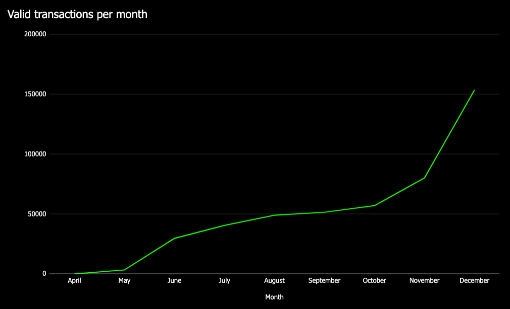

A year in Cyber
by serejandmyself, savetheales on 2020-12-30
Intro
Cyber has had a very productive and filled with events 2020. Here, at cyber~Congress (the launching DAO behind Cyber), we have decided to put together a short review of the year.
Before we move on, we would like to take a minute to thank everyone who has been supporting us. Whether by helping to test the network as a validator, creating cyberlinks as a user, or helping our DAO, cyber~Congress, by participating in the takeoff donation round. Taking the time to complete our silly (but useful) bounties, voting on proposals, talking in chats, following our Twitter account, or simply, if you did anything this year to #fuckgoogle!
We wish all of you the best holiday season and a very open-source and a productive 2021!
Cyber?
The biggest question of the year has been: what is Cyber? What is its purpose and where are we headed? Of course, internally, we know these answers from the inception of the protocol, but we have had difficulty sharing across our message. We have tried to pinpoint our product market fit several times over the past few years. So far, without success. Considering our previous blockchain experience, we knew this isn’t going to be an easy ride. But we were surprised to learn how difficult it is to find a market fit for software, even in the case where this software can solve a real world issue.
So, what is Cyber?
Thanks, to one of our bounties, one of Cyber’s users, has put together a short 45-second overview video. We think that it is the best attempt at explaining Cyber so far, in such a short period of time.
Cyber is a decentralized computer. It is a piece of software, buggy, yet already proven to work software. It is designed to do one thing: answer questions. One might ask why? Why do I need software that answers questions? Well. That’s a great question. We believe that there is no harm in asking questions. Asking questions is what, often, separates us as humans from other species (not just this, of course).
We think that answers should be free of blackbox, intermediary opinions. Answers should be free of censorship and bureaucratic hassle. Blockchain technology, cryptography and game theory provide a great deal of progress in creating a specialized piece of software that can answer questions in a decentralized manner.
Cyber is a software 2.0 protocol that, currently, has 2 functioning apps (just like the Ethereum protocol has apps like Uniswap). Both of those apps are open-source and can be reached at cyber.page. These are a decentralized analogue of a search engine (searching, querying and indexing content out of user-driven p2p networks, with the help of IPFS) and a decentralized analogue of social network, that works with the help of cyberlinks, and allows for military-grade security and twits with the help of web3 signers (such as a Ledger device or a web3 browser extension, such as Keplr) and without bullshit, such as (not safe by design) emails or ads.
Cyber’s computer is shaped as a superintelligent organism. A computer that, in the cyberspace, would be labeled as a consensus computer, for answers. Cyber is managed by its users and token holders without any jurisdictions and CEO’s. It is structured to act as artificial intelligence, in that it can provide answers to questions from the derived information taught to it by its users, prone outdated info, etc. It learns from the collective mind, free from intermediary opinions and answers without censoring any of the answer itself.
With the help of cyberlinks, IPFS, Tendermint, CUDA and cryptography, Cyber can index and rank data, which removes blackbox, intermediary opinions in the formation of the semantics core of the internet. This helps to decentralize the infrastructure of the upcoming Great Web or as you may know it, web3.
Cyber allows to design a trustless, provable and an incentivized method of communication between those who provide content and those searching for it. Effectively removing censorship and creating a world of opportunities for such fields as, open AI, digital marketing, social networks, search mechanisms, decentralized oracles and much more.
Cyber is currently working on autonomous and programmable smart contracts, which will take it another step closer to becoming a superintelligence. Cyber has 2 DAO’s which help to manage it. A community pool and a programmable chain on top of the Tendermint consensus. Users can manage the chain, vote on its parameters, like inflation or the search algorithm, etc. And euler~Foundation (which will evolve into cyber~Foundation) an Aragon, ETH-based DAO, which acts as a decentralized venture fund and Ethereum embassy for Cyber. Hence, separating money (ETH) managed by the users and the state (the chain).
Is this the long way to explain what Cyber does? Yes, it is. But we progress. And what we can’t explain in 45 seconds, seems that our users can.
As we progress into 2021, you can expect new releases, ideas, upgrades, DAO interactions, self-sustained smart contracts, new proposals, gamification, bug fixes and hopefully, a mainet. Will Cyber launch in 2021? We surely hope so. Our task is to deliver a self-sustainable, decentralized piece of working software that can solve a world renowned issue: decentralize the core of the internet, and we have no issue with coming late to the party, yet making a good entrance.
What did happen in Cyber over 2020? Well, quite a lot. And here are some of the main events that occurred over the course of the last year:
2019.12.19 Euler-5 and the Game of Links launch
This is cheating, we know. But the event happened so close to 2020 that we decided to include it in the report.
This event marked our transition from virtually stellar mode (although we were open-source since day 0) to going into a public mode. We launched our first, large, public incentivized testnet and did it (no - not with hookers, blackjack and all of that… although I personally, can’t promise that no immoral deeds occurred) live!
The event, of course, marked the beginning of the first large distribution round, the Game of Links. The game plays a major role for the distribution of our mainet token, CYB, as it awards those who help to build the network and believe in what Cyber does from day one.
2019.12.20 Euler-5 release. Episode I: a new hope
We love timestamps, recording our work and our releases: go-cyber and cyber.page
2020.02.24 first critical bug
One of the main challenges of a testnet is bug hunting. And we found one of them with the help of our community. It was an awesome experience, we developed a migration protocol and fixed bugs to move on with minimum delay.
2020.04.04 Euler-6 launch
Just a little after, we’ve done all the preparations to restart the network. Also, we’ve tested the genesis ceremony and the launch process as it should be in the mainnet.
2020.04.15 euler~Foundation Aragon ceremony
The cyber~Congress DAO launched euler~Foundation to Aragons mainet and released the euler~Foundation Aragon ceremony setup guide. This was an epic event for Cyber and the DAO space! euler~Foundation is a DAO, launched by another DAO, for the community that will govern a self-sustainable protocol, Cyber.
2020.04.17 the test auction and cross chain mechanics
In April, to test euler~Foundation we launched a cross chain bridge between ETH and our Cosmos-SDK chain, with the help of which users could participate in an ERC-20 token auction, vest these tokens and then redeem 1-1 tokens on the Euler chain.
2020.04.25 takeoff proposal
The first proposal to start the takeoff donation round. And we started it as soon as it was approved. We are really proud that all the decisions we make, are done together with the network and the community, with the help of on-chain governance.
2020.04.26 evangelism
As part of our takeoff and in the spirit of Cyber, we launched our evangelism program. Our canary ETH-based DAO, euler~Foundation enlightened and blessed those who applied, via web3 apps, to spread the gospel of Cyber. There were just under a dozen applicants, which received a small, yet a hefty bug of tokens for the fulfilled tasks, such as managing TG groups, Discord servers, helping with the donations, etc.
2020.05.10 upgrade takeoff
The takeoff round didn’t go as expected and was so far from what we expected that we decided to upgrade the takeoff round by simplifying the distribution curve and decreasing the desirable amount of ATOMs. We, in the sentence above, once again means the community. On-chain proposal - again.
2020.05.21 proposal to cosmos
One of my favorite times of 2020. Yes, I am biased. This was the first attempt at decentralized venture capital across the blockchain space, a little before the DeFi craze actually occurred.
As a DAO, we proposed to sell part of our mainet tokens to the Cosmos hub (in an exchange for some ATOM tokens and the future IBC) and created an onchain governance proposal for this. It was crazy, the first public Cosmos-SDK chain AMA on Cosmos TG, a fortnight of Q&A, and… and, alas, the proposal didn’t go thorough. I don’t think this is the right place to call for judgments, so I won’t. But we are glad that we did this and many lessons were learned, hopefully not just by us, but by everyone. And, yes, you may (almost defiantly) expect Cyber to repeat this attempt in 2021.
2020.07.22 onchain upgrade Darwin
The most brilliant technical trick in the network. A new bug was found, and it was necessary to upgrade all the nodes, so that they continue to validate the network. Thanks to the upgrade module introduced by the Regen Network team (which was tested in a series of Regen Network testnets and then merged into one of the latest Cosmos-SDK releases), we had the option for repairing and adding features without the necessity to restart the network from genesis. And we made it! 24⁄7 validators support and some lost nerves, and as a result: Cyber the first network after Regen to use an on-chain upgrade. It was awesome.
2020.09.23 the first network halt
One never knows where the next bug is and how critical it will be. Our team was getting ready for our traditional trip to the mountains, and 1 day before, the network halt occurred. Later we came to the conclusion that it will be our biggest problem of 2020. A memory leak and network fragmentation. Together with the team and our validators, we resurrected the network from the halted block. Our small victory.
2020.10.04 bounty 1 and 2020.11.19 bounty 2
Once again, we, the community, following an onchain governance proposals, used the community pool to launch 2 social bounty programs. Both cases were successful and attracted around 200 unique users with over 80 becoming active users.
Further, we started to develop an amazing onchain, automatic bounty program, which in due time, just might be developed into a separate Cyber-SDK module.
2020.10.07 prolong takeoff proposal
Despite the previous upgrade, the takeoff round did not meet the desired expectations. We asked the community to prolong it till December 1st to finish the round on a beautiful date.
2020.12.15 Keplr support
This is one of the major important achievements for us. From this moment, Cyber citizens can cyberlink safely without a hardware wallet!
2020.12.01 takeoff finished
What else?
Quite a lot actually… documentation, a forum, dozens of media mentions and interviews, user developed apps, cyber.page and much, much more… Join us @fuckgoogle on Telegram to learn more!
Metrics*




*The metrics are underestimated due to the issue with the indexer and lost transactions